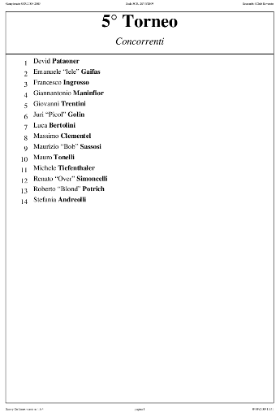
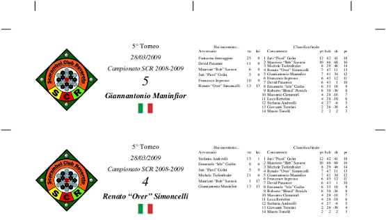
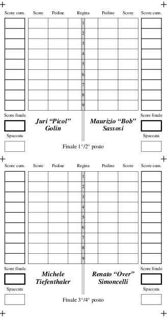
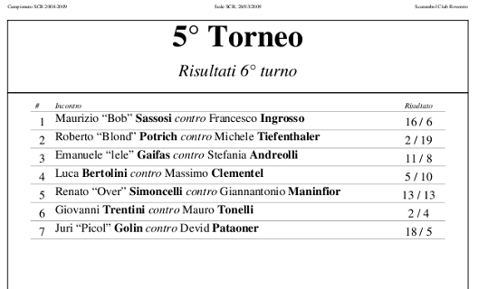
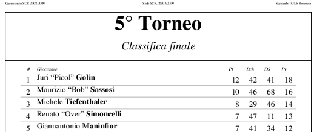

Stampati¶
Suggerimento
A partire dalla versione 3.33, la maggior parte delle stampe mostra un QRCode sulla prima pagina che contiene l'hyperlink alla corrispondente pagina Lit. Il QRCode può essere letto su uno smartphone con una delle svariate applicazioni gratuite disponibili, piuttosto che semplicemente cliccato quando il PDF viene visualizzato su un computer tradizionale.
Il QRCode non appare quando viene usato l'indirizzo localhost per accedere
all'istanza locale di SoL. Per farlo apparire, devi usare l'indirizzo IP del
computer: invece che usare l'URL http://localhost:6996/ per accedere a SoL,
utilizza qualcosa come http://192.168.1.123:6996/ (ovviamente devi determinare e
usare l'indirizzo IP del computer dove viene eseguito SoL) e il QRCode
dovrebbe apparire ed essere utilizzabile da altri dispositivi connessi alla tua rete
locale.
Concorrenti¶

Tessere¶

Cartellini¶

Risultati¶

Classifica¶
